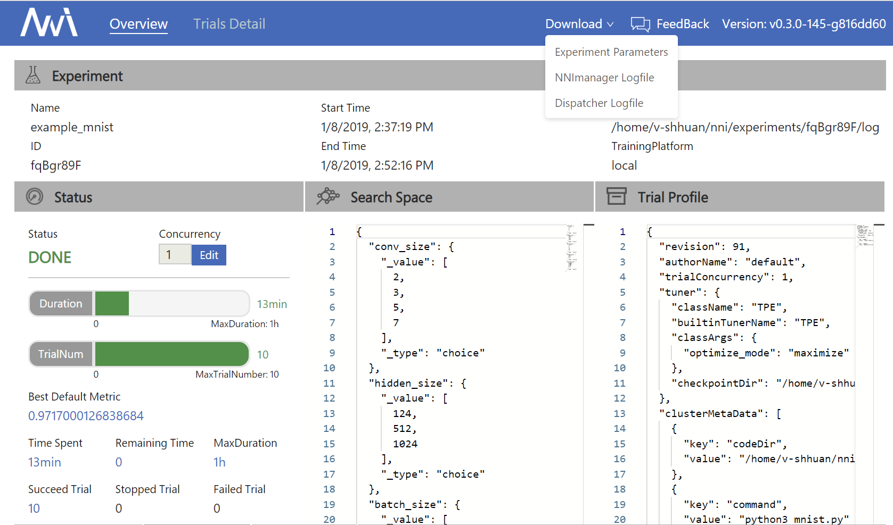
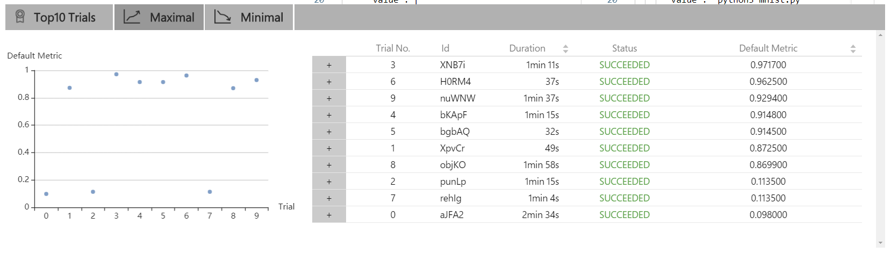
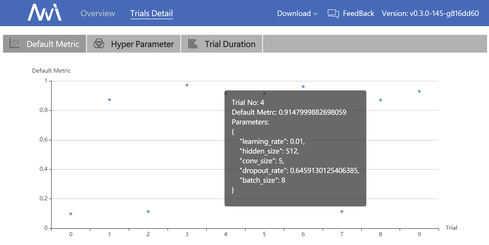
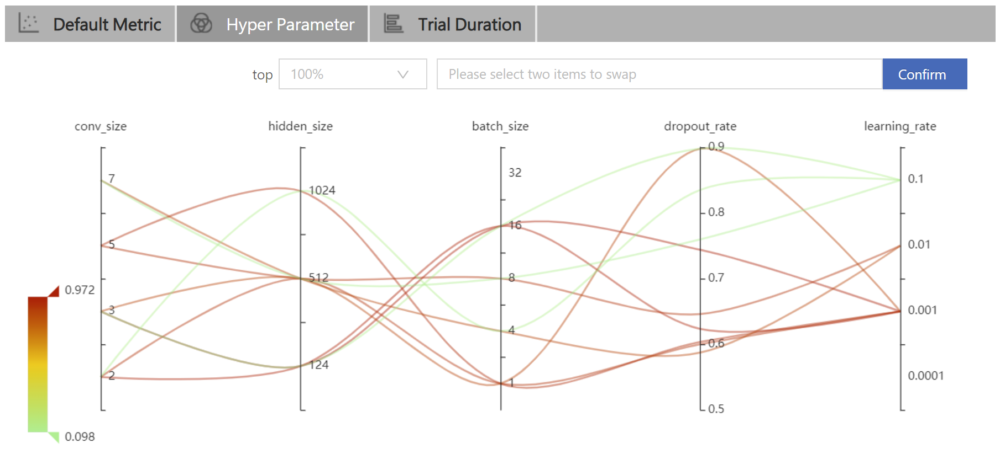
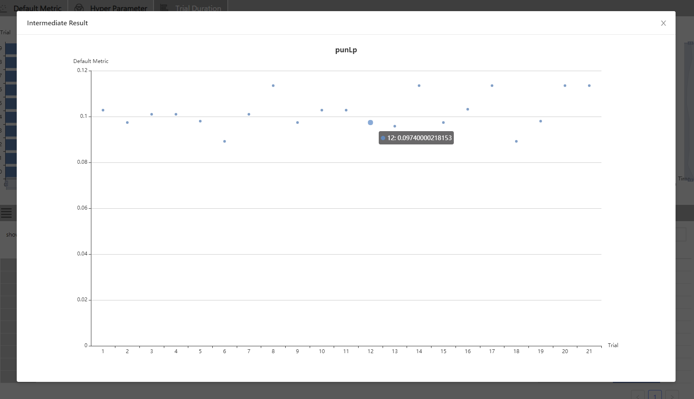

QuickStart¶
Installation¶
We support Linux and MacOS in current stage, Ubuntu 16.04 or higher and MacOS 10.14.1 are tested and supported. Simply run the following pip install in an environment that has python >= 3.5.
python3 -m pip install --upgrade nni
Note:
--usercan be added if you want to install NNI in your home directory, which does not require any special privileges.- If there is any error like
Segmentation fault, please refer to FAQ - For the
system requirementsof NNI, please refer to Install NNI
“Hello World” example on MNIST¶
NNI is a toolkit to help users run automated machine learning experiments. It can automatically do the cyclic process of getting hyperparameters, running trials, testing results, tuning hyperparameters. Now, we show how to use NNI to help you find the optimal hyperparameters.
Here is an example script to train a CNN on MNIST dataset without NNI:
def run_trial(params):
# Input data
mnist = input_data.read_data_sets(params['data_dir'], one_hot=True)
# Build network
mnist_network = MnistNetwork(channel_1_num=params['channel_1_num'], channel_2_num=params['channel_2_num'], conv_size=params['conv_size'], hidden_size=params['hidden_size'], pool_size=params['pool_size'], learning_rate=params['learning_rate'])
mnist_network.build_network()
test_acc = 0.0
with tf.Session() as sess:
# Train network
mnist_network.train(sess, mnist)
# Evaluate network
test_acc = mnist_network.evaluate(mnist)
if __name__ == '__main__':
params = {'data_dir': '/tmp/tensorflow/mnist/input_data', 'dropout_rate': 0.5, 'channel_1_num': 32, 'channel_2_num': 64, 'conv_size': 5, 'pool_size': 2, 'hidden_size': 1024, 'learning_rate': 1e-4, 'batch_num': 2000, 'batch_size': 32}
run_trial(params)
Note: If you want to see the full implementation, please refer to examples/trials/mnist/mnist_before.py
The above code can only try one set of parameters at a time, if we want to tune learning rate, we need to manually modify the hyperparameter and start the trial again and again.
NNI is born for helping user do the tuning jobs, the NNI working process is presented below:
input: search space, trial code, config file
output: one optimal hyperparameter configuration
1: For t = 0, 1, 2, ..., maxTrialNum,
2: hyperparameter = chose a set of parameter from search space
3: final result = run_trial_and_evaluate(hyperparameter)
4: report final result to NNI
5: If reach the upper limit time,
6: Stop the experiment
7: return hyperparameter value with best final result
If you want to use NNI to automatically train your model and find the optimal hyper-parameters, you need to do three changes base on your code:
Three things required to do when using NNI
Step 1: Give a Search Space file in json, includes the name and the distribution (discrete valued or continuous valued) of all the hyperparameters you need to search.
- params = {'data_dir': '/tmp/tensorflow/mnist/input_data', 'dropout_rate': 0.5, 'channel_1_num': 32, 'channel_2_num': 64,
- 'conv_size': 5, 'pool_size': 2, 'hidden_size': 1024, 'learning_rate': 1e-4, 'batch_num': 2000, 'batch_size': 32}
+ {
+ "dropout_rate":{"_type":"uniform","_value":[0.5, 0.9]},
+ "conv_size":{"_type":"choice","_value":[2,3,5,7]},
+ "hidden_size":{"_type":"choice","_value":[124, 512, 1024]},
+ "batch_size": {"_type":"choice", "_value": [1, 4, 8, 16, 32]},
+ "learning_rate":{"_type":"choice","_value":[0.0001, 0.001, 0.01, 0.1]}
+ }
Implemented code directory: search_space.json
Step 2: Modified your Trial file to get the hyperparameter set from NNI and report the final result to NNI.
+ import nni
def run_trial(params):
mnist = input_data.read_data_sets(params['data_dir'], one_hot=True)
mnist_network = MnistNetwork(channel_1_num=params['channel_1_num'], channel_2_num=params['channel_2_num'], conv_size=params['conv_size'], hidden_size=params['hidden_size'], pool_size=params['pool_size'], learning_rate=params['learning_rate'])
mnist_network.build_network()
with tf.Session() as sess:
mnist_network.train(sess, mnist)
test_acc = mnist_network.evaluate(mnist)
+ nni.report_final_result(acc)
if __name__ == '__main__':
- params = {'data_dir': '/tmp/tensorflow/mnist/input_data', 'dropout_rate': 0.5, 'channel_1_num': 32, 'channel_2_num': 64,
- 'conv_size': 5, 'pool_size': 2, 'hidden_size': 1024, 'learning_rate': 1e-4, 'batch_num': 2000, 'batch_size': 32}
+ params = nni.get_next_parameter()
run_trial(params)
Implemented code directory: mnist.py
Step 3: Define a config file in YAML, which declare the path to search space and trial, also give other information such as tuning algorithm, max trial number and max duration arguments.
authorName: default
experimentName: example_mnist
trialConcurrency: 1
maxExecDuration: 1h
maxTrialNum: 10
trainingServicePlatform: local
# The path to Search Space
searchSpacePath: search_space.json
useAnnotation: false
tuner:
builtinTunerName: TPE
# The path and the running command of trial
trial:
command: python3 mnist.py
codeDir: .
gpuNum: 0
Implemented code directory: config.yml
All the codes above are already prepared and stored in examples/trials/mnist/.
When these things are done, run the config.yml file from your command line to start the experiment.
nnictl create --config nni/examples/trials/mnist/config.yml
Note: nnictl is a command line tool, which can be used to control experiments, such as start/stop/resume an experiment, start/stop NNIBoard, etc. Click here for more usage of nnictl
Wait for the message INFO: Successfully started experiment! in the command line. This message indicates that your experiment has been successfully started. And this is what we expected to get:
INFO: Starting restful server...
INFO: Successfully started Restful server!
INFO: Setting local config...
INFO: Successfully set local config!
INFO: Starting experiment...
INFO: Successfully started experiment!
-----------------------------------------------------------------------
The experiment id is egchD4qy
The Web UI urls are: [Your IP]:8080
-----------------------------------------------------------------------
You can use these commands to get more information about the experiment
-----------------------------------------------------------------------
commands description
1. nnictl experiment show show the information of experiments
2. nnictl trial ls list all of trial jobs
3. nnictl top monitor the status of running experiments
4. nnictl log stderr show stderr log content
5. nnictl log stdout show stdout log content
6. nnictl stop stop an experiment
7. nnictl trial kill kill a trial job by id
8. nnictl --help get help information about nnictl
-----------------------------------------------------------------------
If you prepare trial, search space and config according to the above steps and successfully create a NNI job, NNI will automatically tune the optimal hyper-parameters and run different hyper-parameters sets for each trial according to the requirements you set. You can clearly sees its progress by NNI WebUI.
WebUI¶
After you start your experiment in NNI successfully, you can find a message in the command-line interface to tell you Web UI url like this:
The Web UI urls are: [Your IP]:8080
Open the Web UI url(In this information is: [Your IP]:8080) in your browser, you can view detail information of the experiment and all the submitted trial jobs as shown below.
View summary page¶
Click the tab “Overview”.
Information about this experiment will be shown in the WebUI, including the experiment trial profile and search space message. NNI also support download these information and parameters through the Download button. You can download the experiment result anytime in the middle for the running or at the end of the execution, etc.

Top 10 trials will be listed in the Overview page, you can browse all the trials in “Trials Detail” page.

View trials detail page¶
Click the tab “Default Metric” to see the point graph of all trials. Hover to see its specific default metric and search space message.

Click the tab “Hyper Parameter” to see the parallel graph.
- You can select the percentage to see top trials.
- Choose two axis to swap its positions

Click the tab “Trial Duration” to see the bar graph.

Below is the status of the all trials. Specifically:
- Trial detail: trial’s id, trial’s duration, start time, end time, status, accuracy and search space file.
- If you run on the OpenPAI platform, you can also see the hdfsLogPath.
- Kill: you can kill a job that status is running.
- Support to search for a specific trial.

- Intermediate Result Grap
